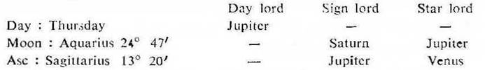
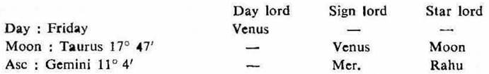
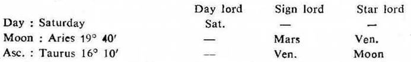

(a) At times (not always) in horary the ruling planets show the time of fulfilment of a question asked. The question may relate to a minor or major event, it matters little.
When there is a strong desire, keenness, anxiousness, eagerness or urge from within to know the result about any matter, then and then only you may predict with the help of ruling planets alone; and you may prove correct.
The ruling planets which are in the star or sub of retrograde planets should be avoided.
A retrograde ruling planet shall give the results only when it becomes direct in motion.
The sensitive degree of any Zodiacal sign in which all the ruling planets jointly operate is important for fulfilment of any question.
The question is fulfilled at the time when all the ruling planets operate jointly.
In joint operation one of the ruling planets becomes the Sign lord, the other one becomes the Star lord, the third one the Sub lord and the fourth one becomes the Sub sub lord.
(b) If an event is likely to happen within 24 hours take the transit of the Asc. and count from the ascending degree of the moment of the query.
If it is to happen within a month consider the transit of Moon and count from the Sign transitted by Moon at the moment of the query.
If it is to happen after a month but within a year look to the transit of Sun and count from the sign transitted by Sun at the moment of the query.
Generally ruling planets are five in number. The three ruling planets which you come across earlier in joint operation should be considered first. From the rest of the two that which is earlier in joint operation should be considered as the Sub sub lord. Of course, no hard and fast rule can be given. The reader may form his own rules according to his experience.
(1) Question – When shall we stop discussing the subject ?
Time of judgment– 28–8–1969, Thursday; 3–25 P.M. I.S.T.; 23°N2′, 72°E35′.
Ruling Planets

At this moment Rahu was in Aquarius. So it represents Saturn. Thus the ruling planets are Jupiter, Venus, Saturn and Rahu.
As the question is a minor one, it is a matter to be fulfilled within a few minutes or an hour. So take the transit of the Asc. and count from the ascending degree of the moment i.e. Sagittarius 13° 20′ and get the degree on which all the ruling planets operate jointly.
Sagittarius 18° 6′ 40″ to 20° 6′ 40″ is the area on which Jupiter, Venus and Rahu operate jointly.
Sagittarius 18° 40′ 40″ to 18° 59′ 40″ is the area on which all the ruling planets viz. Jupiter (as sign lord), Venus (as star lord), Rahu (as sub lord) and Saturn (as sub sub lord) operate jointly.
So at the time when Sagittarius 18° 40′ 40″ rises in the Asc. the discussion will be stopped.
This degree was on the Asc. at about 3–50 P.M. I.S.T. and immediately a female relative entered the house and we stopped the discussion.
(2) Question – Two of my children have gone to the hospital in the early morning. They have not yet returned home, when will they come back ?
Time of judgment. 10–4–1970, Friday; 11–7 A.M. I.S.T; 23° N 2′, 72° E 35′.
Ruling Planets

Thus the ruling planets are Mercury, Rahu, Venus and Moon.
As the question is a minor one, take the transit of the Asc. and count from the ascending degree of the moment i.e. Gemini 11° 4′ and get the degree on which all the ruling planets operate jointly.
Gemini 15° 13′ 20″ to 17° 26′ 40″ is the area on which Mercury, Rahu and Venus operate jointly.
Gemini 15° 42′ 12″ to 15° 53′ 19″ is the area on which all the ruling planets viz. Mercury (as sign lord), Rahu (as star lord), Venus (as sub lord) and Moon (as sub sub lord) operate jointly.
So at the time when Gemini 15° 42′ 12″ rises in the Asc. both the children might have returned home.
This degree was on the Asc. at about 11–30–8 A.M. I.S.T. It was 11–32 A.M. I.S.T. when both the children returned home.
(3) Question – Probable date when the examination results will be declared.
Time of Judgment– 22–11–1969, Saturday; 6–28 P.M. I.S.T; 23° N 2′, 72° E 35′.
Ruling Planets

At that moment Rahu was in Aquarius. So it represents Saturn. Hence prefer Rahu to Saturn. Thus the ruling planets are Venus, Mars, Rahu and Moon.
As the matter is to happen within a week or so, take the transit of Moon and count from the sign transitted by Moon at the moment i.e. Aries 19° 40′ and get the degree on which all the ruling planets operate jointly.
Taurus 11° 6′ 40″ to 11° 53′ 20″ is the area on which Venus Moon and Mars operate jointly. But this degree is not favourable, because Moon is in conj. with Saturn at the moment of judgment. The matter will therefore be delayed and we have to reject this degree.
Taurus 24° 6′ 40″ to 26° 6′ 40″ is the area on which Venus, Mars and Rahu operate jointly.
Taurus 25° 49′ 40″ to 25° 59′ 40″ is the area on which all the ruling planets viz. Venus (as sign lord), Mars (as star lord), Rahu (as sub lord) and Moon (as sub sub lord) operate jointly.
So at the time when Moon transits Taurus 25° 49′ 40″, the examination results will be declared.
Moon was transitting this degree on 25–11–1969, Tuesday at about 3–30 P.M. I.S.T. and the examination results were received in the press after that time and the querent could know his result.